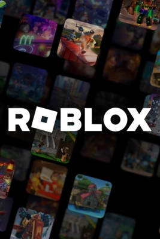
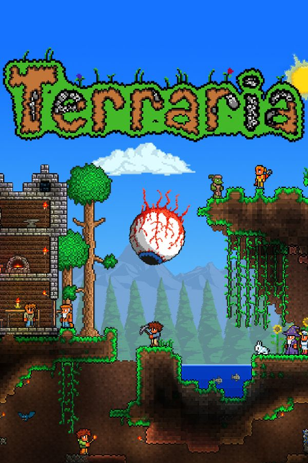

Dataspill
Jeg liker å spille dataspill. Jeg spilte mye før, men lysten er i ferd med å avta. Jeg liker imidlertid fortsatt å ha det gøy med venner. Jeg har massevis av spill i Steam-biblioteket mitt, men jeg spiller bare tre for øyeblikket. Jeg lager også mitt eget Roblox-spill.

Roblox

Need For Speed: Most Wanted
Terraria